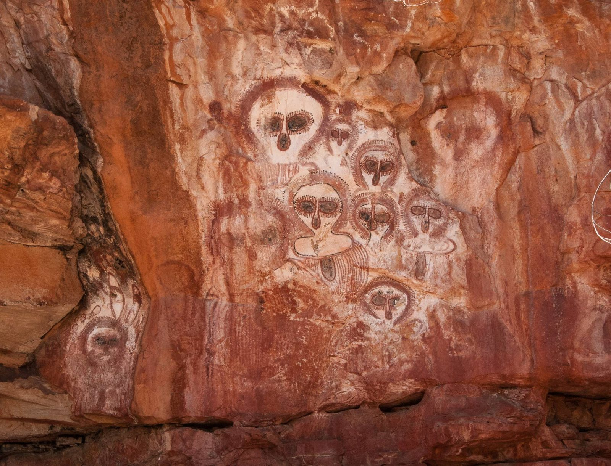
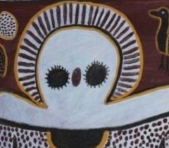

Curatorial note. This essay accompanies Lily Karadada’s Wandjina in the Australia room of the PacificaRomania collection. It reads the painting through Mircea Eliade — who devoted a book, Australian Religions: An Introduction (1973), to precisely this tradition — and then asks the harder question his own method invites: where do his universal categories illuminate the Wandjina, and where do they flatten it? The essay is presented bilingually; use the language selector above for the Romanian edition.Notă curatorială. Acest eseu însoțește lucrarea Wandjina a lui Lily Karadada în sala Australia a colecției PacificaRomania. Citește pictura prin Mircea Eliade — care a închinat o carte, Australian Religions: An Introduction (1973), tocmai acestei tradiții — și pune apoi întrebarea mai grea pe care o cheamă propria lui metodă: unde luminează categoriile sale universale Wandjina și unde o aplatizează? Eseul este prezentat bilingv; folosiți selectorul de limbă de mai sus pentru ediția în română.
Two great figures stand side by side against a blood-red ground, ringed by owls and long-necked birds, their bodies dissolving into fields of fine dotting like rain seen from a distance. Each has enormous dark eyes and a vertical stroke for a nose — and no mouth. Around each head runs a halo of radiating lines. These are Wandjina: the cloud and rain ancestors of the Mowanjum peoples — Worrorra, Ngarinyin and Wunambal — of the Kimberley in the far north-west of Australia. Lily Karadada, a senior Wunambal custodian of Kalumburu and one of the foremost painters of the Wandjina, has here moved onto canvas an image whose original home is the rock.
Două figuri mari stau alături pe un fond roșu-sânge, înconjurate de bufnițe și păsări cu gât lung, trupurile lor topindu-se în câmpuri de punctare fină, ca ploaia privită de departe. Fiecare are ochi întunecați, uriași, și o linie verticală în loc de nas — și nicio gură. În jurul fiecărui cap se rotește un halou de linii radiante. Aceștia sunt Wandjina: strămoșii-nori și ai ploii ai popoarelor Mowanjum — Worrorra, Ngarinyin și Wunambal — din Kimberley, în nord-vestul îndepărtat al Australiei. Lily Karadada, custode wunambal de seamă din Kalumburu și una dintre cele mai de frunte pictorițe ale Wandjina, a mutat aici pe pânză o imagine a cărei casă dintâi este stânca.

Karadada did not invent these figures. She inherited them from galleries like the one above, where Wandjina have gazed from the sandstone of the Kimberley for millennia, faces of white pigment haloed in cloud and lightning, painted and repainted by the custodians who hold them. Such images are sacred and their reproduction is a matter of Law, entrusted to the right people; when a Wunambal elder paints them onto canvas she is not copying an artefact but extending a living tradition into a new surface. In the film recorded of her at work, Karadada can be seen laying down the great ovoid head and the mouthless face with the same authority the rock demands.
Karadada nu a inventat aceste figuri. Le-a moștenit din galerii ca cea de mai sus, unde Wandjina privesc din gresia ținutului Kimberley de milenii, chipuri de pigment alb încununate de nor și fulger, pictate și repictate de custozii care le dețin. Asemenea imagini sunt sacre, iar reproducerea lor este o chestiune de Lege, încredințată oamenilor îndreptățiți; când o bătrână wunambal le pictează pe pânză, ea nu copiază un artefact, ci prelungește o tradiție vie într-o suprafață nouă. În filmul înregistrat cu ea la lucru, Karadada poate fi văzută așternând marele cap ovoidal și chipul fără gură cu aceeași autoritate pe care o cere stânca.
I. The mouthless faceChipul fără gură

The Wandjina has no mouth because its power over water is too great to be given a channel: were the mouth painted, the elders say, the rain would fall without end and drown the world. The halo is at once cloud, lightning and the feathers of the wet-season storm; the dark eyes are the still centre of the thunderhead. Karadada surrounds her Wandjina with birds — owls above all — and with the small forms of animals and spirit-beings, because the ancestor does not stand apart from the living country but presides over its whole population of creatures. The figure is not a portrait of a god. It is a face that regulates weather.
Wandjina nu are gură fiindcă puterea sa asupra apei este prea mare spre a i se da o cale: dacă gura ar fi pictată, spun bătrânii, ploaia ar cădea fără sfârșit și ar îneca lumea. Haloul este deodată nor, fulger și penele furtunii din anotimpul ploios; ochii întunecați sunt centrul neclintit al norului de furtună. Karadada își înconjoară Wandjina cu păsări — mai ales bufnițe — și cu formele mărunte ale animalelor și ființelor-spirit, fiindcă strămoșul nu stă deoparte de ținutul viu, ci veghează asupra întregii sale populații de făpturi. Figura nu este portretul unui zeu. Este un chip care cârmuiește vremea.
II. Lalai: the image as presenceLalai: imaginea ca prezență
For Eliade the decisive category is the hierophany — the showing-forth of the sacred within a thing, so that the thing becomes, without ceasing to be itself, a vessel of another order of reality. The Wandjina is exactly this. In the time the Ngarinyin call Lalai — the creative epoch that the wider world calls the Dreaming — the Wandjina travelled the country, made its laws and its waters, and at the end of their journeys laid themselves down into the rock, leaving their images behind as their own bodies. The painting is therefore not a picture of an absent spirit; it is the mode in which the ancestor remains present. Here Eliade’s master-distinction between the sacred and the profane genuinely illuminates: the ochre is not representation but manifestation, and to stand before it is to stand at a point where Lalai touches the present.
Pentru Eliade, categoria hotărâtoare este hierofania — arătarea sacrului într-un lucru, astfel încât lucrul devine, fără a înceta să fie el însuși, vas al unei alte ordini a realității. Wandjina este tocmai aceasta. În timpul pe care ngarinyin îl numesc Lalai — epoca creatoare pe care lumea mai largă o numește Visul — Wandjina au străbătut ținutul, i-au făcut legile și apele, iar la capătul călătoriilor lor s-au culcat în stâncă, lăsându-și în urmă imaginile drept propriile trupuri. Pictura nu este deci o imagine a unui spirit absent; este modul în care strămoșul rămâne prezent. Aici distincția-cheie a lui Eliade dintre sacru și profan luminează cu adevărat: ocrul nu este reprezentare, ci manifestare, iar a sta înaintea lui înseamnă a sta într-un punct unde Lalai atinge prezentul.
III. The law of repaintingLegea repictării
The most striking feature of the Wandjina cult is a duty: the images in the rock shelters must be periodically retouched and repainted by the people who hold the right to them. This is not restoration in the museum sense. To repaint the Wandjina is to renew its power — to keep the monsoon rains coming, the plants and animals fertile, the country lawful. To let the images fade would be to let the world run down into drought and disorder. Eliade would recognise this immediately as the ritual re-actualisation of origins, the “eternal return” by which archaic religion refuses the erosion of profane time and periodically restores the cosmos to the freshness of its first making. The Wandjina image is, in the phrase implied by the comparison, a religious-technological interface: a durable medium through which ancestor-power, weather, fertility and clan law are held together and maintained. The great flood loosed when the ancestral owl Dumbi was mistreated — the deluge sent by the Wandjina and the water-snake — is the standing reminder of what happens when the law lapses. Karadada’s crowding birds are not decoration; they are the congregation the law protects.
Cea mai izbitoare trăsătură a cultului Wandjina este o datorie: imaginile din adăposturile de stâncă trebuie retușate și repictate periodic de oamenii care dețin dreptul asupra lor. Aceasta nu este restaurare în sensul muzeal. A repicta Wandjina înseamnă a-i reînnoi puterea — a face ca ploile musonice să vină mai departe, plantele și animalele să fie roditoare, ținutul să rămână sub Lege. A lăsa imaginile să pălească ar însemna a lăsa lumea să alunece în secetă și dezordine. Eliade ar recunoaște îndată în aceasta reactualizarea rituală a originilor, „eterna reîntoarcere” prin care religia arhaică refuză eroziunea timpului profan și readuce periodic cosmosul la prospețimea întâii sale faceri. Imaginea Wandjina este, în formularea sugerată de comparație, o interfață religios-tehnologică: un mediu durabil prin care puterea strămoșească, vremea, fertilitatea și legea clanului sunt ținute laolaltă și întreținute. Potopul dezlănțuit când bufnița ancestrală Dumbi a fost batjocorită — diluviul trimis de Wandjina și de șarpele-apă — este mereu-prezenta amintire a ceea ce se întâmplă când legea se stinge. Păsările înghesuite ale lui Karadada nu sunt podoabă; sunt adunarea pe care legea o ocrotește.
IV. Ungud and the water-snakeUngud și șarpele-apă
Beneath the Wandjina runs the water. The Kimberley traditions hold that the ancestor is bound to Ungud (also Wunggud) — the great snake of the deep waterholes, of fertility and of the Dreaming, from whose still pools the spirit-children of the unborn are drawn. The Wandjina rises as cloud from that water and returns to it as rain; the snake below and the cloud above are two phases of a single hydrological sacred. This is the same recognition that, elsewhere in this collection, raises the Rainbow Serpent across Aboriginal Australia, the Naga as river-guardian in Malaysia and the balaur of Romania: that the power of water is best carried in a serpentine form, and that a river or a waterhole is never a mere resource but a living ancestral presence charged with memory and obligation. The Wandjina is the face this water turns to the sky.
Sub Wandjina curge apa. Tradițiile din Kimberley susțin că strămoșul este legat de Ungud (și Wunggud) — marele șarpe al adăpătorilor adânci, al fertilității și al Visului, din ale cărui bulboane liniștite sunt scoși copiii-spirit ai celor nenăscuți. Wandjina se ridică drept nor din acea apă și se întoarce la ea drept ploaie; șarpele de dedesubt și norul de deasupra sunt două faze ale unui singur sacru hidrologic. Este aceeași recunoaștere care, în altă parte a acestei colecții, ridică Șarpele-Curcubeu în toată Australia aborigenă, Naga, gardianul râului, în Malaysia, și balaurul României: că puterea apei se poartă cel mai bine într-o formă șerpuită și că un râu sau o adăpătoare nu este niciodată o simplă resursă, ci o prezență ancestrală vie, încărcată de memorie și de obligație. Wandjina este chipul pe care această apă îl întoarce spre cer.
V. Does Eliade fit?I se potrivește Eliade?
And yet the comparativist must keep faith with the particular. Some of Eliade’s categories fit the Wandjina like a key: hierophany, sacred time, the eternal return, the living image that renews the world. Others fit awkwardly, and the friction is instructive. His favourite master-symbol, the axis mundi — the vertical world-pillar joining earth, heaven and underworld at a single sacred Centre — belongs to the cosmologies of temple and mountain, and maps poorly onto a Kimberley sacred order that is horizontal and distributed: not one Centre but a country-wide mesh of sites, songlines and shelters, each the estate of a particular clan under a particular Law. To read the Wandjina as one more instance of the Centre is to risk dissolving exactly what makes it itself — its embeddedness in kinship, in clan title, in the specific ecology of the monsoon. And Eliade’s tendency to hear in myth a nostalgia for lost origins can mute the Wandjina’s most practical register: this is not chiefly a longing for a vanished golden age but an active technology of governance, a way of keeping rain, land and law in working order now. Eliade illuminates the Wandjina as hierophany; he flattens it when the ancestor is filed under a universal Centre and its living jurisprudence is heard only as elegy.
Și totuși, comparatistul trebuie să rămână credincios particularului. Unele dintre categoriile lui Eliade se potrivesc Wandjina ca o cheie: hierofania, timpul sacru, eterna reîntoarcere, imaginea vie care reînnoiește lumea. Altele se potrivesc anevoie, iar frecarea este instructivă. Simbolul său preferat, axis mundi — stâlpul vertical al lumii care unește pământul, cerul și lumea de jos într-un singur Centru sacru — aparține cosmologiilor templului și muntelui și se așază prost peste o ordine sacră din Kimberley care este orizontală și distribuită: nu un singur Centru, ci o rețea întinsă pe tot ținutul de locuri, linii de cânt și adăposturi, fiecare fiind domeniul unui anume clan sub o anume Lege. A citi Wandjina drept încă o pildă a Centrului înseamnă a risca dizolvarea tocmai a ceea ce o face ea însăși — înrădăcinarea ei în rudenie, în titlul de clan, în ecologia anume a musonului. Iar înclinația lui Eliade de a auzi în mit o nostalgie a originilor pierdute poate amuți registrul cel mai practic al Wandjina: aceasta nu este în primul rând un dor după o vârstă de aur apusă, ci o tehnologie activă a guvernării, un mod de a ține ploaia, pământul și legea în bună rânduială acum. Eliade luminează Wandjina ca hierofanie; o aplatizează când strămoșul este clasat sub un Centru universal, iar jurisprudența ei vie este auzită doar ca elegie.
Conclusion: cave, bark, canvas, collectionConcluzie: peșteră, scoarță, pânză, colecție
The Wandjina has travelled a long road of surfaces — from the rock shelter, where it was retouched for millennia; onto bark and board in the mission decades of the twentieth century; onto acrylic and ochre canvases like this one, made by senior custodians for a world beyond the country; and finally into a collection such as PacificaRomania. Eliade would read the constancy of the structure beneath the changing media as proof of his central claim: the sacred symbol survives its supports. But the truer reading keeps the artist in view. When Lily Karadada paints the Wandjina onto canvas, she is not surrendering the rock image to the market; she is extending the law of repainting into a new medium, keeping the ancestor fresh and asserting its authority before a wider world. Read through Brâncuși — the collection’s second lens — the great ovoid head pared to eyes and halo is the pursuit of an essential, originating form; read through Eliade, it is a hierophany. Read through the Wunambal, it is something both men only circled: a face, still holding back the rain, still owed its paint.
Wandjina a străbătut un lung drum de suprafețe — din adăpostul de stâncă, unde a fost retușat milenii de-a rândul; pe scoarță și placaj în deceniile misionare ale secolului al XX-lea; pe pânze de acril și ocru precum aceasta, făcute de custozi de seamă pentru o lume de dincolo de ținut; și, în cele din urmă, într-o colecție precum PacificaRomania. Eliade ar citi statornicia structurii de sub mediile schimbătoare drept dovadă a afirmației sale centrale: simbolul sacru își supraviețuiește suporturilor. Dar citirea mai adevărată păstrează artista în câmpul privirii. Când Lily Karadada pictează Wandjina pe pânză, ea nu predă imaginea din stâncă pieței; ea prelungește legea repictării într-un mediu nou, păstrând strămoșul proaspăt și afirmându-i autoritatea înaintea unei lumi mai largi. Citit prin Brâncuși — a doua lentilă a colecției — marele cap ovoidal redus la ochi și halou este căutarea unei forme esențiale, originare; citit prin Eliade, este o hierofanie. Citit prin wunambal, este ceva ce amândoi bărbații doar l-au dat ocol: un chip care încă ține ploaia în frâu, căruia încă i se cuvine vopseaua.
Notes & sourcesNote și surse
- Wandjina.Wandjina. On the mouthless cloud-and-rain ancestors of the Worrorra, Ngarinyin and Wunambal, see Wandjina and the Mowanjum communities.Despre strămoșii-nori și ai ploii, fără gură, ai popoarelor Worrorra, Ngarinyin și Wunambal, vezi Wandjina și comunitățile Mowanjum.
- The artist.Artista. Lily Karadada (born c. 1937), a Wunambal elder of Kalumburu in the north Kimberley, was among the most celebrated painters of the Wandjina, often surrounding them with owls, birds and spirit-figures.Lily Karadada (născută c. 1937), bătrână wunambal din Kalumburu, în nordul Kimberley, s-a numărat printre cele mai prețuite pictorițe ale Wandjina, înconjurându-i adesea cu bufnițe, păsări și figuri-spirit.
- Eliade on the sacred image.Eliade despre imaginea sacră. Hierophany and the sacred/profane distinction: M. Eliade, The Sacred and the Profane (1957); ritual renewal of origins: The Myth of the Eternal Return (1949).Hierofania și distincția sacru/profan: M. Eliade, Sacrul și profanul (1957); reînnoirea rituală a originilor: Mitul eternei reîntoarceri (1949).
- Eliade on Australia.Eliade despre Australia. Eliade treated Aboriginal traditions directly in Australian Religions: An Introduction (Cornell University Press, 1973), the reference point for both the sympathy and the critique offered here.Eliade a tratat direct tradițiile aborigene în Australian Religions: An Introduction (Cornell University Press, 1973), reperul deopotrivă al simpatiei și al criticii de aici.
- Water-snake and Rainbow Serpent.Șarpele-apă și Șarpele-Curcubeu. On Ungud and the hydrological symbolism linking the Wandjina to the wider serpent traditions, see the Rainbow Snake.Despre Ungud și simbolismul hidrologic care leagă Wandjina de tradițiile mai largi ale șarpelui, vezi Șarpele-Curcubeu.
- Rock art & the artist at work.Arta rupestră și artista la lucru. The Kimberley rock galleries are the direct inspiration for Karadada’s paintings; the rock-shelter photograph reproduced here is from the Wikipedia article “Wandjina” (Wikimedia Commons). Lily Karadada can be seen painting Wandjina in this film.Galeriile rupestre din Kimberley sunt inspirația directă a picturilor lui Karadada; fotografia adăpostului de stâncă reprodusă aici provine din articolul Wikipedia „Wandjina” (Wikimedia Commons). Lily Karadada poate fi văzută pictând Wandjina în acest film.
- Provenance.Proveniență. Held in the PacificaRomania collection; first exhibited at the Embassy of Romania in Canberra (2019–2020).Se află în colecția PacificaRomania; expus pentru prima dată la Ambasada României la Canberra (2019–2020).